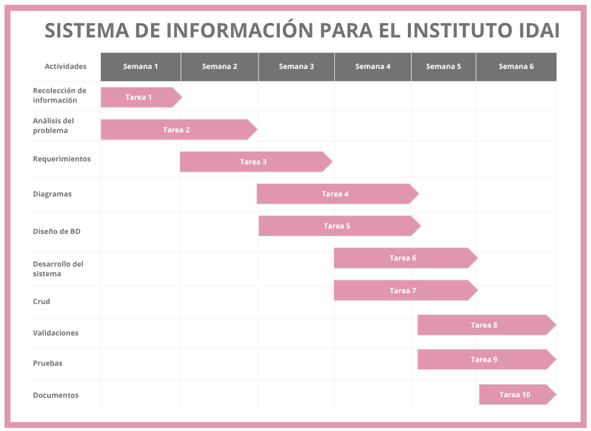

1. Introducción
El Instituto de Adaptación Infantil (IDAI) presta servicios médicos, terapéuticos y de acogida para niños y personas con discapacidad. Actualmente, la institución se enfrenta a un reto logístico significativo: los profesionales elaboran los reportes de forma manual. Además, cuentan con un archivo de más de 17,000 expedientes físicos en papel, y el personal médico carece de herramientas informáticas para el registro y consulta ágil de esta información.
Este proyecto propone el diseño y desarrollo de una base de datos relacional para digitalizar y centralizar la información clínica, terapéutica y administrativa del IDAI, permitiendo un manejo eficiente de los historiales, la asignación de terapias y la generación de reportes mensuales.
2. Antecedentes Institucionales
El Instituto de Adaptación Infantil (IDAI) de la ciudad de La Paz es una institución especializada en la atención integral de niños, adolescentes y personas con discapacidad intelectual y trastornos del neurodesarrollo. Entre las principales áreas de atención se encuentran: neurología, psiquiatría, psicología, fisioterapia, terapia ocupacional, psicopedagogía, fonoaudiología y estimulación temprana.
El instituto cuenta con aproximadamente 17,000 expedientes almacenados físicamente, lo cual dificulta la búsqueda rápida de información, el seguimiento de pacientes y la organización de reportes clínicos. El personal médico y administrativo no dispone de un sistema informático centralizado, ocasionando retrasos, riesgo de pérdida de documentación y dificultades en la generación de reportes estadísticos.
Misión: Brindar atención integral especializada a niños, niñas y adolescentes con discapacidad intelectual y trastornos del desarrollo neuropsicoevolutivo, mediante servicios médicos, terapéuticos, educativos y de rehabilitación, contribuyendo al desarrollo de sus capacidades y mejorando su calidad de vida.
Visión: Ser una institución referente a nivel departamental y nacional en la atención integral y rehabilitación de niños, niñas y adolescentes con discapacidad intelectual, destacándose por la calidad de sus servicios y el compromiso humano de su personal.
2.2 Antecedentes de Proyectos Similares
| Título | Autor | Año | Institución |
|---|---|---|---|
| Sistema Web para la Gestión de Historias Clínicas en Centros de Rehabilitación | Carlos A. Molina Pérez | 2021 | Universidad Nacional de Colombia |
| Sistema de Gestión Hospitalaria para el Control de Pacientes y Expedientes Clínicos | María F. López García | 2020 | Universidad Tecnológica de México |
| Sistema Web para la Gestión de Terapias y Seguimiento de Pacientes con Discapacidad Intelectual | Javier A. Ruiz Medina | 2022 | Universidad de Guadalajara |
3. Planteamiento del Problema
En la ciudad de La Paz, el IDAI ofrece atención integral mediante terapias, evaluaciones diagnósticas y seguimiento clínico especializado. Sin embargo, gran parte de la información médica y administrativa aún es gestionada manualmente. Las principales problemáticas identificadas son:
- Dificultad en el registro y almacenamiento organizado de la información de los pacientes.
- Acceso lento a los expedientes clínicos debido al manejo manual de documentos físicos.
- Falta de control eficiente de terapias, evaluaciones y seguimientos.
- Demora en la generación de reportes clínicos y administrativos.
- Falta de centralización de la información médica y terapéutica.
- Riesgo de pérdida, deterioro o duplicidad de información por el uso de expedientes físicos.
4. Árbol de Problemas

5. Formulación del Problema
Problema General: ¿De qué manera se puede optimizar la gestión de información clínica, terapéutica y administrativa de los pacientes del Instituto de Adaptación Infantil (IDAI) mediante el desarrollo de un sistema informático?
Problemas Específicos:
- ¿Cómo mejorar el registro y almacenamiento de la información de los pacientes?
- ¿Cómo agilizar el acceso a los expedientes clínicos y antecedentes terapéuticos?
- ¿Cómo optimizar el control de terapias, evaluaciones y seguimientos clínicos?
- ¿Cómo reducir el tiempo requerido para la generación de reportes clínicos?
- ¿Cómo centralizar la información médica para facilitar la coordinación entre especialistas?
- ¿Cómo disminuir el riesgo de pérdida, deterioro o duplicidad de información?
6. Objetivos
Objetivo General: Diseñar e implementar un sistema de base de datos para la gestión interna de expedientes clínicos, control de terapias y reportes del Instituto de Adaptación Infantil (IDAI) en la ciudad de La Paz.
Objetivos Específicos:
- Identificar los tipos de discapacidad y los servicios especializados disponibles en el IDAI.
- Proyectar un modelo de base de datos relacional para registrar información de beneficiarios y tutores.
- Implementar un módulo para registrar al personal médico y asignar planes de intervención.
- Automatizar el registro de evaluaciones diagnósticas y la generación de informes estadísticos.
- Optimizar la gestión y seguimiento de terapias mediante herramientas informáticas.
- Controlar los costos asociados a los servicios para pacientes externos.
7. Justificación
Económica: Reducción de costos asociados al manejo manual de documentación física, almacenamiento de expedientes y tiempo invertido en procesos administrativos. La digitalización optimizará recursos humanos y disminuirá el uso excesivo de material impreso.
Social: Mejora en la atención a niños, niñas y adolescentes con discapacidad intelectual y cognitiva. El sistema beneficiará a especialistas y familias, promoviendo una atención más eficiente y oportuna.
Institucional: Fortalecimiento de los procesos administrativos y clínicos del IDAI, mejorando la coordinación entre las diferentes áreas de atención.
Tecnológica: Modernización de los procesos de gestión mediante la implementación de un sistema web y base de datos centralizada con Flask y Oracle.
8. Alcances y Límites
Alcances:
- Registro y administración de pacientes internos y externos.
- Gestión de expedientes clínicos digitales.
- Registro de evaluaciones médicas y terapéuticas.
- Administración de especialistas y áreas de atención.
- Control y seguimiento de terapias realizadas.
- Generación de reportes clínicos y administrativos.
- Gestión de usuarios y control de acceso mediante roles.
- Centralización de información en base de datos relacional.
Límites: El sistema no incluirá app móvil, módulos avanzados de contabilidad, integración con otras instituciones externas ni inteligencia artificial para diagnósticos. Requiere acceso a red interna institucional.
10. Metodología de Investigación — RUP
Se empleó la metodología Rational Unified Process (RUP), que permite desarrollar sistemas de software de manera organizada, incremental e iterativa, dividida en cuatro fases:
| Fase | Actividades Principales |
|---|---|
| Inicio | Identificación del problema, levantamiento de información, definición de objetivos y alcance. |
| Elaboración | Análisis del sistema, requerimientos, diagramas (ambiental, casos de uso, clases, E-R) y diseño de base de datos. |
| Construcción | Desarrollo del sistema con Flask + Oracle: módulos de pacientes, cuidadores, especialistas, terapias, historiales y reportes. |
| Transición | Pruebas funcionales, validaciones CRUD, correcciones y documentación final. |
Desarrollo Incremental: Incremento 1: Pacientes y cuidadores · Incremento 2: Especialistas · Incremento 3: Historiales y terapias · Incremento 4: Reportes y seguridad.
12. Cronograma de Actividades
| N° | Actividad | S1 | S2 | S3 | S4 | S5 | S6 |
|---|---|---|---|---|---|---|---|
| 1 | Recolección de información | ✓ | |||||
| 2 | Análisis del problema | ✓ | ✓ | ||||
| 3 | Definición de requerimientos | ✓ | ✓ | ||||
| 4 | Elaboración de diagramas | ✓ | ✓ | ||||
| 5 | Diseño de base de datos | ✓ | ✓ | ||||
| 6 | Desarrollo del sistema | ✓ | ✓ | ||||
| 7 | Implementación de funcionalidades | ✓ | ✓ | ||||
| 8 | Pruebas y validaciones | ✓ | ✓ | ||||
| 9 | Corrección de errores | ✓ | ✓ | ||||
| 10 | Elaboración de documentación final | ✓ |
12.3 Diagrama de Gantt
